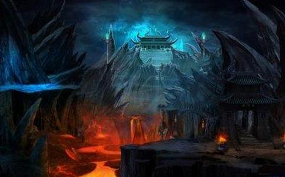

提婆达多几次谋害
阿难尊者说，正如佛祖所说，这都是提婆达多咎由自取，自己作恶，导致自己堕入地狱。我现在悲伤的是，提婆达多虽然不顾自己的名誉，不顾种族的荣誉，不为父母尊长争光，有辱整个释迦族，让整个释迦族蒙羞。不过呢，提婆达多堕入地狱，还是不太恰当啊。
阿难尊者说：为什么这么说呢？我们释迦族是转轮圣王的后裔，提婆达多是王族，不应该堕入地狱啊，提婆达多应当
阿难尊者说：提婆达多有大
佛祖说：这个人要在地狱待一劫。
阿难尊者又问：劫有两种，大劫，小劫，这个人要待一劫是什么劫呢？
佛祖说：这个人要在地狱里面待一个大劫，就是贤劫。然后才会命终，投胎做人。
阿难尊者说：要这么久啊！
阿难尊者那个时候没有证阿罗汉，担心他的亲哥哥，那也是人之常情。
当时，阿难尊者哭哭啼啼的，又问佛祖：提婆达多从阿鼻地狱出来，会生到哪里呢？
佛祖说：会生到四天王天。
阿难尊者又问：提婆达多在四天王天死后又去哪里呢？
佛祖说：又生到三十三天，夜摩天，兜率天，化乐天，他化
阿难尊者又问：然后呢？
佛祖说：提婆达多从地狱出狱之后，生到天上，在六十劫当中不堕三涂，都在天上和
这下阿难尊者开心了，又问佛祖：佛祖啊，提婆达多干了很多坏事，所以下了地狱。他有什么功德，导致出狱之后六十劫都不再受苦，还修成辟支佛，名字叫做南无？
辟支佛比罗汉还要高一点，也是觉，意思是缘觉或者独觉，不过这个觉跟佛祖的觉还是有差距。
有人也会想，提婆达多做了什么呢，出狱之后就去享福，还能证辟支佛？难道因为他是佛祖的亲戚吗？当然不是这样。
佛祖告诉阿难尊者：弹指之间这么短的时间内，如果你对三宝发了善心，那这个福报也是无法譬喻的啊。何况提婆达多博学多闻，记忆力超群。提婆达多因为宿世恶缘，所以对佛祖起杀心。又因为宿世的善缘，最终对佛祖起了喜悦之心。因为这个缘故，出狱之后，六十劫不堕三恶道。因为他最后临死前，起了和悦之心，口中说南无二字，所以以后证辟支佛的时候，名号就叫做南无。
阿难尊者听了之后，估计是心花怒放，上前
当时，大目犍连尊者说：我准备去阿鼻地狱跑一趟，对提婆达多说这个好消息，让他高兴高兴。
佛祖说：不要心急，不要打
以前说过瞿波离的故事，诽谤
所以佛祖提醒大目犍连尊者，你去的话，要注意方法方式才行呢。
当时，大目犍连尊者说：我现在知道64种语言，我可以用合适的语言，告诉提婆达多。
估计阿鼻地狱用的语言跟我们人间用的频率是不同的。人耳只能听到20～2万赫兹的声音。
佛祖说：那你去吧。
当时，阿难尊者听到之后，欢欣雀跃，非常高兴。
南无本师
南无本师释迦牟尼佛
南无本师释迦牟尼佛
原文：
尔时，阿难复重白佛：“如是，
所以然者？我等门族出转轮圣王位，然提婆达兜身出于王种，不应现身入地狱中。提婆达兜应当现身尽有漏，成无漏，心
提婆达兜在时有大威神，极有神德，乃能往至三十三天，变化自由，岂得斯人复入地狱乎？不审，世尊，提婆达兜在地狱中，为经历几许年岁？”
佛告阿难：“此人在地狱中经历一劫。”
是时，阿难复重白佛言：“然劫有两种，有大劫、小劫，此人为应何劫？”
佛告阿难：“斯人当经历大劫。所谓大劫者，即贤劫。是尽劫数，行尽命终，还复人身。”
阿难白佛：“提婆达兜尽丧人根，遂复成就。所以然者？劫数长远，夫大劫者不过贤劫。”
尔时，阿难倍复悲泣，哽噎不乐，复重白佛：“提婆达兜从阿鼻地狱出，当生何处？”
佛告阿难：“提婆达兜于彼命终，当生四天王上。”
阿难复问：“于彼命终当生何处？”
佛告阿难：“于彼命终展转当生三十三天、焰天、兜率天、化自在天、他化自在天。”
阿难复问：“于彼命终当生何处？”
佛告阿难：“于是，提婆达兜从地狱终，生善处天上，经历六十劫中不堕三恶趣，往来天、人，最后受身，当剃除须发，著三法衣，以信坚固，出家学道，成辟支佛，名曰南无。”
尔时，阿难前白佛言：“如是，世尊，提婆达兜由其恶报，致地狱罪；为造何德，六十劫经历生死，不受苦恼，后复成辟支佛，号名曰南无？”
佛告阿难：“弹指之顷发善意，其福难喻，何况提婆达兜博古明今，多所诵习，总持诸法，所闻不忘！计彼提婆达兜昔所怨仇，起杀害心向于如来；复由曩昔缘报故，有喜悦心向于如来，由此因缘报故，六十劫中不坠堕三恶趣。复由提婆达兜最后命终之时，起和悦心，称南无故，后作辟支佛，号名曰南无。”
尔时，阿难即前礼佛，重自陈说：“唯然，世尊，如神所教。”
是时，大目揵连前白佛言：“我今欲至阿鼻地狱中，与提婆达兜说要行，慰劳庆贺。”
佛告目连：“汝宜知之，勿复卒暴，专心正意，无兴乱想。所以然者？极恶行众生难调、难成，然后乃堕阿鼻地狱中。又彼罪人不解人间音响，言语往来。”
尔时，目连复白佛言：“我今所解六十四音语开通，我当以此音响，往语彼人。”
佛告目连：“汝宜知是时。”是时，阿难闻斯语，